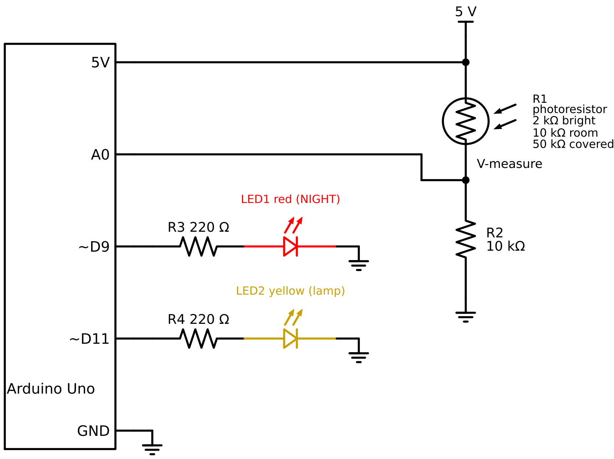
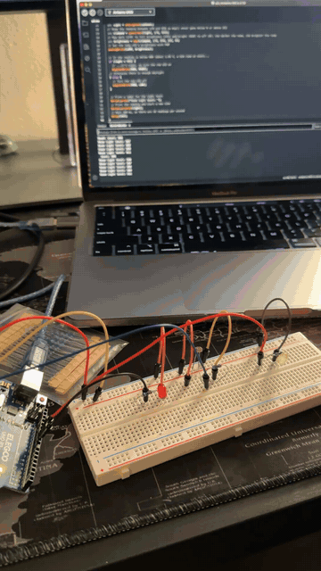
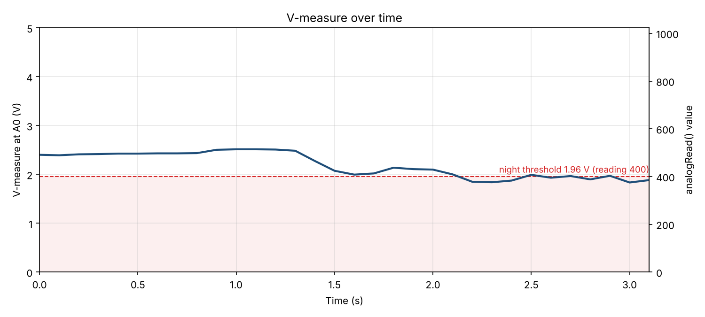

HCDE 439 Physical Computing · a light-sensing smart home prototype
A Smart Night Light for a smart home: a photoresistor senses how bright the room is. As the room gets darker, a yellow “lamp” LED fades in, and when it drops below a dusk threshold a red NIGHT LED turns on. The light level is printed to the serial port.

analogWrite() can dim it.With the photoresistor on top (R1) and the fixed resistor on the bottom (R2), the voltage at A0 is:
Vmeasure = 5 V × R2 / (R1 + R2)
and analogRead() turns 0–5 V into a number from 0–1023, so reading = Vmeasure × 1023 / 5.
The photoresistor is about 2 kΩ with a phone flashlight shining on it, about 10 kΩ in normal room light, and about 50 kΩ when I cover it with my hand. With R2 = 10 kΩ:
| Situation | R1 (photoresistor) | Vmeasure = 5 × 10k / (R1 + 10k) | analogRead() |
|---|---|---|---|
| Flashlight (bright) | 2 kΩ | 5 × 10 / 12 = 4.17 V | 853 |
| Room light | 10 kΩ | 5 × 10 / 20 = 2.50 V | 512 |
| Dusk (night threshold) | 15.6 kΩ | 5 × 10 / 25.6 = 1.96 V | 400 |
| Covered by hand (dark) | 50 kΩ | 5 × 10 / 60 = 0.83 V | 171 |
So I expect readings between about 170 (dark) and 850 (bright), which are the calibration values used in my code.
The best fixed resistor puts the sensor's range in the middle of the 0–5 V window. Because a photoresistor's resistance changes by a factor (2 kΩ to 50 kΩ is 25×), the right middle is the geometric mean, not the average:
R2 = √(Rlow × Rhigh) = √(2,000 Ω × 50,000 Ω) = √100,000,000 = 10,000 Ω = 10 kΩ
Rmin = (5 V − 2.0 V) / 0.020 A = 150 Ω, so I used the next standard value, 220 Ω: (5 − 2.0) / 220 ≈ 13.6 mA.
Why I chose the values in the code:
constrain() keeps the reading in this range so map() stays between 0 and 255.map(clamped, 170, 850, 255, 0) is flipped so that dark gives full brightness (255, the 8-bit analogWrite() maximum) and bright gives 0.if-statement. It’s below normal room light (512), so a small shadow doesn’t trigger it.// Analog pin connected to V-measure, the middle of the photoresistor / 10k voltage divider
const int SENSOR = A0;
// Red NIGHT LED (on when the room is dark)
const int RED = 9;
// Yellow lamp LED (fades with PWM, so it must be on a PWM pin ~)
const int LAMP = 11;
// setup() runs once when the Arduino starts
void setup() {
// Start serial communication at 9600 baud so readings show in the Serial Monitor
Serial.begin(9600);
// Set the red LED pin as an output
pinMode(RED, OUTPUT);
// Set the lamp LED pin as an output
pinMode(LAMP, OUTPUT);
}
// loop() runs over and over forever
void loop() {
// Read V-measure as 0-1023 (0-5 V): about 170 when covered (dark), 850 under a flashlight (bright)
int light = analogRead(SENSOR);
// Keep the reading between 170 and 850 so map() never goes below 0 or above 255
int clamped = constrain(light, 170, 850);
// Map dark (170) to full brightness (255) and bright (850) to off (0): the darker the room, the brighter the lamp
int brightness = map(clamped, 170, 850, 255, 0);
// Set the lamp LED's brightness with PWM
analogWrite(LAMP, brightness);
// If the reading is below 400 (about 1.96 V, a dim room at dusk)...
if (light < 400) {
// ...it's night, so turn the red LED on
digitalWrite(RED, HIGH);
// Otherwise there is enough daylight
} else {
// Turn the red LED off
digitalWrite(RED, LOW);
}
// Print a label for the light level
Serial.print("Room light level: ");
// Print the reading and start a new line
Serial.println(light);
// Wait 100 ms, so there are 10 readings per second
delay(100);
}
Output from the demo (one line every 100 ms) as my finger covers the sensor:
Room light level: 437
Room light level: 431
Room light level: 429
Room light level: 409
Room light level: 378
Room light level: 376
Room light level: 383
Room light level: 407
Room light level: 395
Room light level: 402
Room light level: 388
Room light level: 403
Room light level: 375
Room light level: 385Room light read about 430–520, close to the 512 I calculated. Covering the sensor with a finger dropped it to about 375–400, below the threshold, so the red LED turned on. A finger only partly shades the sensor, so it didn’t reach the fully dark 170.
Either position works. Swapping them doesn't change how much the voltage swings; it only flips its direction, and the code has to be flipped to match.
Photoresistor as R1 (top, my circuit): V = 5 × 10k / (Rphoto + 10k)
Photoresistor as R2 (bottom), 10 kΩ on top: V = 5 × Rphoto / (10k + Rphoto)
Both give the same swing (171 to 853), just in opposite directions. With the photoresistor on the bottom, the code would flip: map(clamped, 170, 850, 0, 255) and if (light > 623).

analogRead() value (right axis) from 32 Serial Monitor readings during the demo, one every 100 ms. Uncovered, V-measure is about 2.4–2.5 V. As my finger covers the sensor it drops to about 1.83–1.98 V, mostly below the 1.96 V night threshold (dashed line), which turns the red LED on.The ranges on both sides of map() would change. A 16-bit ADC reads 0–65,535 instead of 0–1023 (216 / 210 = 64× larger for the same voltage), so my input values become 170 × 64 = 10,880 and 850 × 64 = 54,400, and the threshold becomes 400 × 64 = 25,600. 10-bit PWM outputs 0–1023 instead of 0–255, so full brightness becomes 1023.
// before: 10-bit ADC in, 8-bit PWM out
int brightness = map(clamped, 170, 850, 255, 0);
// after: 16-bit ADC in, 10-bit PWM out
long brightness = map(clamped, 10880, 54400, 1023, 0);The reading would also need a long or unsigned int, because an Uno int only goes up to 32,767.
I used Claude to help draft the code and comments, generate a cleaner schematic drawing, and graph. Also to check my calculations, and format this page. I built and tested the circuit and recorded the photo and video myself.